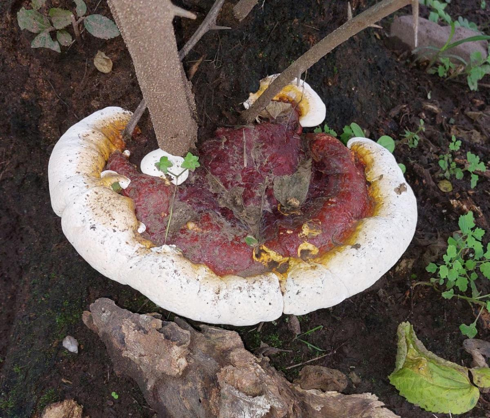
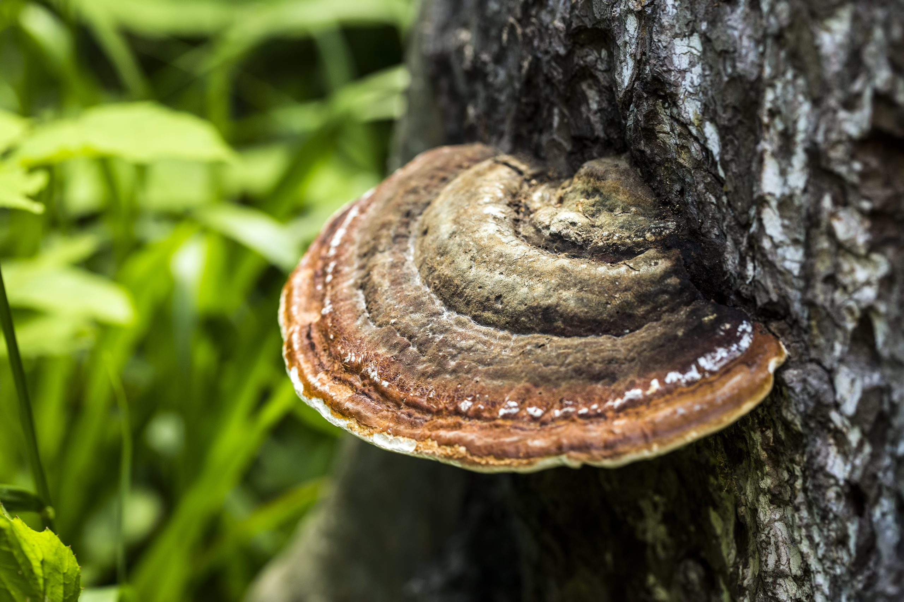

Ganoderma
Ganoderma spp.


Descripción
Ganoderma es un hongo medicinal que crece sobre troncos y madera en descomposición en bosques tropicales y subtropicales. Es conocido por su característico sombrero brillante y su uso tradicional en medicina natural. En Nicaragua se puede encontrar en zonas húmedas y sombreadas.
Datos Curiosos
- Es conocido como "reishi" en la medicina tradicional china.
- Se utiliza desde hace miles de años por sus propiedades curativas.
- Puede crecer varios años sobre la madera, manteniendo su forma.
- Su superficie es coriácea y brillante, mientras que la parte inferior libera esporas.
- Se considera símbolo de longevidad y salud en varias culturas.
Beneficios y Usos
- Medicinal: Apoya el sistema inmunológico y tiene efectos antioxidantes.
- Infusiones: Se puede preparar en té para aprovechar sus propiedades.
- Tradicional: Usado en medicina natural y herbolaria nicaragüense.
- Educativo: Estudiado por biólogos y micólogos en ecosistemas locales.